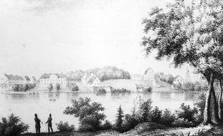
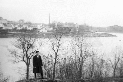
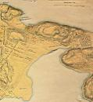
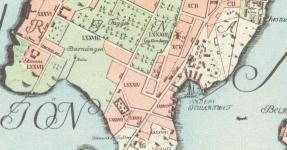
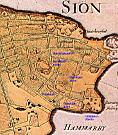
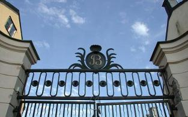
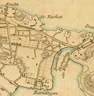
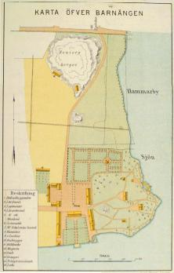
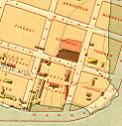

|
BARNÄNGEN
Ur En bok om Söder, Per Anders Fogelström, 1953
Nedanför Vita bergen, på sluttningarna mot Hammarby sjö, ligger det område som kallas Barnängen.
Det ägdes på 1580-talet av köpmannen Venceslaus Herold och såldes till Danvikens
hospital. Meningen var att man skulle anlägga ett barnsjukhus på strandtomten och ett mindre hus
tycks också ha blivit uppfört. 1602 kallas därför området 'Barnestugeängen'' och man talar om
"barnestugan vid Hammarby sjön". Redan något tiotal år senare har namnet förenklats till Barnängen.
Barnestugan blev tydligen en ganska kortvarig företeelse - men namnet hängde i. Och den som först
gjorde det känt var Jakob Gavelius (Gavelius var född i Jönköping, släkten från Gävle - därav
namnet). Under många studieresor och som importör av kläde för armens räkning hade han lärt
känna klädestillverkningens finesser. Han började köpa upp tomter på Söder - och höll sej oftast i
obehaglig närhet av vantmakare Leijonancker vid Nytorget, i sinom tid kommer han också att
köpa upp den bankrutterade vantmakarens egendomar.
Under sina resor hade Gavelius
hämtat "skickeliga Mästare och nödige verktyg" och började snart tillverka kläde och
ylletyger "vilka tillförne till den godhet aldrig varit i Sverige tillverkade". 1698, samma år
som Gavelius dog, adlades han till Lagerstedt som tack för arbetet med de "riksgagnande
manufakturerna".
Borgaren Hans Westman hade redan några år tidigare än Gavelius börjat sin verksamhet på
en tomt intill och han var en skicklig fabrikör som tidvis konkurrerade hårt med
Barnängsfabriken om klädesleveranserna till armén. Småningom övergick han dock främst
till att färga färdigt gods, både ylle och siden. Bland annat hade han till uppgift att ge
karolinernas uniformer den rätta blå färgen. En gammal bostadslänga från färgeriet, som
under skiftande ägare fortsatte verksamheten ända fram mot senaste sekelskiftet, står kvar,
en gulmålad idyll.
Två färgbilder ur Flygfoto Stockholm, Nils-Åke Siversson, Roland Svensson, Björn Sylvén, 2002. Boken innehåller fantastiska flygfoton från hela Stockholm med omgivningar. Den svartvita bilden från 1980 finns i Stadsmuseums arkiv. Klicka i bilderna för förstoring!
På Westmans tid ansågs indigofärgen vara den enda lämpliga för de blå uniformerna. Det var en
ganska besvärlig färgningsprocedur - vid rivningen av färgen placerade man till exempel sönderstött
färgämne i en stor gryta varefter fyra "kanonkulor" lades i och grytan sattes i sådan rörelse att en kula
roterade i grytans centrum och tre i periferin. Det fordrades några man för att få igång grytan med
kulorna men sedan kunde en ensam arbetare fortsätta. Därefter bearbetades färgen med träpinnar
och rördes etappvis ut med vatten. Så fylldes de stora kyparna (väldiga under marken inmurade
koppargrytor runt vilka det eldades) med vatten som tillsattes med de rätta mängderna vejde, krapp,
kalk och indigo. Efter tre-fyra dagar när kypen var ljum kunde man börja prova - sedan kunde en kyp
hållas i gång ett halvår utan nysättning. Och tyget färgas, torkas, vrides och klappas, luftas, tafflas
och sköljes.
Det doftar,från en främmande trädgård, fylld av växter som ger färg: bresilja, orseielle, kvercitron,
gurkmeja, kermes, cochenille, bourre ...
Gavelius efterträdare på Barnängen blev mågen Hans Ekman
som kom till ledningen i motvindstider, Karl XII:s nödmyntsbetalande stat var inte så lätt att göra
affärer med och ännu sämre blev det efter kungens död. Vävstolarna fick långa tider stå stilla, under
några år lades rörelsen ner helt. Under en sån period köpte Riddarhuset in sej som ägare i Barnängsfabriken och
Ekman fick utstå svåra duster, både med Gavelius' övriga arvingar och med
riddarhusherrarna som köpt tre-fjärdedelsandel i Barnängen för att förränta "husets" kapital.
(Dessutom hade man kastat sej in i affärer för att "sätta ridderskapet och adeln i större
anseende och bliva en skola för ridderskapets och adelns barn, som hava lust att lägga sig på
commersen".)

 Teckning från söder över Hammarbysjön Teckning från söder över Hammarbysjön
|
|
Efter Ekman och den stränge Salander kommer två bröder Apiarie som Barnängs-fabrikörer.
De lyckades efter några krisår få full fart på fabrikationen och hade också en stor
tobaksplantage med ett hundratal arbetare. Det var under deras tid som de ståtligaste
Barnängshusen kom till, bland andra corps-de-logiet som nu blivit inköpt av staden och ska
bevaras som kulturminne. Arkitekt var Elias Kessler och han byggde i typisk herrgårdsstil, det
var ju också ute på landet, vid en idyllisk insjö. Ett kinesiskt lusthus i parken var en liten
tidstypisk ide. Men man byggde inte bara till lust - hus för höns, kalkoner, ankor och gäss
omnämns också.
Den vackra gården, de lyckosamma fabrikörerna - naturligtvis söker sej folk ut för att
lustvandra i parken och delta i festligheter. Det blir några lyckliga och glada år - men dagen
före julafton 1788 inträffar nånting oroande. Assessor Sparschuck har kommit på besök till
Carl Gustaf Apiarie och sitter frisk och pigg vid spelbordet, stiger upp för att gå ut, faller i
förstugan drabbad av hjärnblödning och dör följande dag.
|
|
Inte så märkligt kan man tycka - men det är en händelse som skrämmer, som diskuteras av
vidskepliga människor. Och Carl Gustaf Apiarie (den av bröderna som nu ensam driver
fabriken) märker att kriserna gör sej kännbara igen, det är under Gustav III:s ryska krig,
"Malongen" (som åter står under Barnängens ledning) har blivit sjukhus och Apiaries
arbetare som kommenderats till sjukvårdare drabbas av smittosamma sjukdomar och
många avlider. En eldsvåda utbryter och ödelägger stora lager. Antalet arbetare och
vävstolar sjunker, fabrikörens unge son som varit delägare avlider, upplösningen börjar,
1805 blir det auktion.
Det blir en tynandets tid, inte bara för Barnängen, det är likadant för hela den svenska industrin
omkring år 1800, innan den nya stora tiden kommer. Olika ägare avlöser varann i den gamla fabriken
tills man definitivt ger upp, den sista fabrikören säljer egendomen till ett bolag som 1829 bildats i
syfte att inrätta en gossskola efter den så kallade Hillska metoden.
|
|

Foto från söder över Hammarbysjön
|
Nu skulle det bli mönsterskola på Barnängen, vävstolarna ut, pulpeter och sängar in.
Sängar ja, det ska bli internatskola här ute på landet, åter talar man om sunt läge och frisk
luft. Man reparerar, förändrar, ska ha plats för lärarbostäder, sång- och gymnastiksalar,
skolsalar och sovrum för eleverna.
Minnoms bröder logemangen
Med dessa bäddar sköt vid sköt
Där oss lugnt till väck-momangen
Morpheus i famnen slöt
diktar en f. d. elev tretti år efter skolans nerläggande. Han berättar också om bollspel, bad,
fiske, "dufvovård" och "punschkalas":
Det är nu blott lust att minnas
Hur man då tog tår på tand.
Följden blev, som man kan spåra
Sträng rannsakning, räfst och dom.
Efter "strafflag" dömdes våra
Svirrare till lås och bom.
Ty just genom cellsystemet
Re'n i skolan löste vi
Det bekanta straffproblemet,
Som gör statsmän bryderi.
|
|
|
|

Söder i våra hjärtan
Barnängens koloniområde
|
|
|
Ärkebiskop J. 0. Wallin och professor J. Berzelius kommer på inspektion (1836) och har
många vackra ord att ge skolledningen. Men ord räcker inte, det är pengar som behövs och
det får man inte nog av trots att terminsavgifterna höjs och lärarlönerna sänks. 1846 ger
ledningen upp. Två år senare inköper Lars Johan Hierta Barnängen och börjar driva en
sidenfabrik här.
I åtta år bodde Hierta i "herrgården" på Barnängen. Medan hans döttrar lustvandrade i parken eller strövade över idylliska ängar eller längs gröna stränder (i dagböcker berättar döttrarna också om kälkbacksåkning, skridskoturer och kräftfiske) satt
husfadern och diskuterade med tidens storheter, bland andra kom H. C. Andersen och J. L. Heiberg på besök.
Herrgården var trivsam men sidenfabriken en dålig affär - Hierta säljer. Nu blir det många byten och
många småindustrier på Barnängen en tid. Man tillverkar tändstickor, ättika, handskar, vaxduk,
talgljus - tills Stockholms Bomullsspinneri flyttar in 1870 och blir den sista klädesindustrin på
platsen. Under mellantiden, före Bomullsspinneriets tid, övertogs det lediga namnet "Barnängen" av
en teknisk fabrik vid Bondegatan.
Barnängens historia
Text ur: Värdefulla industrimiljöer, Stockholms stadsmuseum, 1984
|

1674
|
|
Det obebyggda Barnängsområdet vid Hammarby sjö, första gången omnämnt 1674, uppmättes av stadsingenjören Johan Holm och indelades i en rutnätsplan troligen av Jean de la Vallée. Området uppläts av staden till manufakturer 1691, där främst arméns behov av beklädnad skulle tillgodoses genom inhemsk tillverkning. Daniel Young, adlad Leijonancker, hade redan på 1660-talet anlagt en klädesfabrik (vantmakeri) vid Nytorget. Klädesimportören för armen Jacob Gavelius (1655-98) erhöll 1687 manufakturprivilegier och 1691 tillstånd att etablera en textilindustri på en tomt på Barnängen. Gavelius flyttade en tvåvånings timmerbyggnad från Leijonanckers fabrik till Barnängen och uppförde den 1691 på murad grund. Byggnaden blev fabrikens första väveri. De samtidigt byggda mindre byggnaderna kom att bilda en symmetrisk gårdsanläggning orienterad mot Hammarby sjö. Enligt kommerskollegiums fördelning av arméleveranserna mellan rikets vantmakerier skulle Stockholmsföretagen förse livgardet och 14 landsregementen samt
|
garnisonerna i Dalarö,
Finland och Östersjöprovinserna. Gavelius fick på sin lott leveranserna till livgardet, de livländska garnisonerna och 15 regementen. Tillverkningen översteg betydligt armens behov och tillgodosåg även civil efterfrågan samt export.
Efter Jacob Gavelius (adlad Lagerstedt) övertogs rörelsen 1698 av hans svärson Hans Ekman som fortsatte med kronoleveranserna jämte klädernas förfärdigande både i fabriken och som förlagsarbete i hemmen. 1718 var 20 vävstolar igång i Barnängsfabriken. Enligt ett inventarium från 1724 som upprättats vid förhandlingarna med Riddarhuset, bestod den av Gavelius (Lagerstedt) anlagda manufakturen av väveribyggnaden med överskäreri och pressrum, vidare öster om den ett färgeri och en färgarbostad med stall och lagerbyggnader. I centrum för anläggningen låg trädgården med ett murat åttkantigt lusthus, dyrbart inrett med panelning, gyllenläderstapeter och dekorerade bjälktak. Väster om den befann sig infarten med portvakt- och trädgårdsmästarebostad och mittemot var det timrade bostadshuset beläget om tio rum i två våningar. På norra delen av gården stod torkramarna fritt med lagerhuset i fonden. Vid stranden låg ett färgerihus, en flottbro för sköljning av bojtyger och svavelhuset. Längst i norr sträckte sig arbetarbostadshusen mot sjön. På ängsmarken låg en ruddamm.
1724 inträdde Riddarhuset som huvudintressent i Barnängsmanufakturen. Enligt avtalet mellan parterna avyttrade Ekman tre fjärdedelar av företaget till Riddarhuset som önskade förränta sitt kapital. Barnängs- och Leijonanckerska fabrikerna sammanslogs med beteckning Barnängsmanufaktoriet, vars ledning anförtroddes åt Hans Ekman med en årslön av 7 500 dkmt från Riddarhuset och 2 500 från hans egen part. Rörelsen bar sig emellertid inte på grund av minskade order från armén och låg efterfrågan av innestående varor. På grund av den uteblivna vinsten i företaget avskedades Ekman och Eric Salander utnämndes till ny föreståndare 1731.
|
Salander utökade produktionen med den eftertraktade varan fint engelskt kläde och lät bygga en valkkvarn. Han organiserade även arbetarnas bespisning på företagets bekostnad samt ivrade för att adeln och borgarskapet skulle åläggas att bära kläder av svensk tillverkning. År 1740 bedrevs tillverkningen på 27 vävstolar och med 286 arbetare under ledning av 17 mästare och 32 gesäller. I hemmen bereddes arbetsmöjligheter för 15 arbetare och 271 redgarnsspinnerskor. Produkterna utgjordes av tyger, strumpor och trikåvaror. Vävstolarnas antal ökade 1745-1760 från 35 till 44 och arbetarnas från 529 till 725. Barnängens ylleväveri blev det största i Stockholm under större delen av 1700-talet.
Fabriksbyggnaderna renoverades under denna tid. 1741 ombyggdes verkhuset helt i sten efter en eldsvåda. Norra delen blev inredd för logementer med väggfasta våningssängar. I södra delen inrymdes presshus, överskäreri, ruggningsrum och torkramar. Samtidigt byggdes flera fabrikslokaler och en sjukstuga. 4 st trädgårdar försågs med "nya kvarter och gångar", klocktornet med ny klocka och det åttkantiga lusthuset ombyggdes till kapell.
|
|

1733
|
|

1751
|
|
1761 övertog bröderna Hans Reinhold och Carl Apiarie företaget genom inköp av Riddarhusets och de enskilda delägarnas andelar. Carl Apiarie blev ensam ägare 1782 efter broderns utträde. Under Apiarieepoken drevs fabrikens prestation ytterligare upp genom förbättrad organisation. Huvudprodukterna grovt och fint kläde exporterades bl a även till Finland. 1762 bedrevs rörelsen med 40 vävstolar och 808 arbetare. Även anläggningen nydanades under denna period genom medverkan av murmästarna Johan Wilhelm Elies och Elias Kessler och erhöll det utseende den har idag.
De gamla träbyggnaderna ersattes successivt med nya i sten på samma plats kring den centrala gården. Manufakturen erhöll sin prägel av 1700-talets bruksmiljö genom den nya ägarbostaden, corps de logiet, som i centrum för anläggningen uppfördes 1767 efter Elias Kesslers ritningar.
|
Den nya huvudbyggnaden ersatte kapellbyggnaden med sina fyra flyglar och byggdes i två våningar med mansardtak och mittfronton. Den för tiden moderna planlösningen hade sidoordnat trapphus och en enfilad mot sjösidan. Brandförsäkringsverifikationen beskriver en högklassig inredning med panelning, vävtapeter och porslinskakelugnar. I vindsvåningen inrymdes garnlagret. Anläggningens infart och stallgård utformades av Johan Wilhelm Elies.
1781 uppfördes stenportalen och en kvadratisk portvaktsbyggnad i två våningar jämte ett stall. Följande år fullbordades stallgården med ett tvåvånings vagnshus, stall och förråd. Öster om huvudbyggnaden byggdes ett färgeri och fabrikshus i två våningar år 1758. Trädgårdarna med orangerier, bersåer, alléer och lusthus i kinesisk stil tillkom successivt 1765-80 och kom att nyttjas rationellt för odlingar av trädgårdsprodukter. En inhägnad gård reserverades för ankuppfödning. Slutligen revs det timrade bostadshuset och ersattes mittemot stallgården av ett varumagasin i två våningar med rundade fönster och bärande kryssvälvda utrymmen.
Vid utbrottet av ryska kriget 1788 bedrevs fabrikationen på 57 vävstolar och 740 arbetare, vid krigets slut däremot på 42 stolar och med 540 arbetare. Arméleveranserna betalades ej av kronan. Det stora varulagret brann upp 1792. Efter kriget försämrades konjunkturerna markant och Carl Apiarie gick i konkurs. Textilindustrierna befann sig vid denna tid i ett brytningsskede då nyetablerade fabriker på landsbygden konkurrerade med stadsföretagen samtidigt som de fabriker som hade infört mekaniserad teknik trängde ut de hantverksmässigt drivna.
|
|


|
|
År 1805 inköpte stadsmajoren Johan Petter Gladberg fastigheten av Apiaries son Gabriel och dennes kompanjon August Byström. Gladberg införde maskindrift i begränsad skala varmed produktionskostnaderna nedbringats. Såväl klädestillverkningen av olika finhetsgrader, som produktionen av olika tygsorter minskade emellertid och vid Gladbergs död 1812 var endast 9 vävare sysselsatta. En kort uppblomstringstid ägde rum fram till 1822 under bröder Feiffs ägotid, då ett tjugotal vävstolar var igång med 78 arbetare. Fabrikshuset påbyggdes med en våning 1817 och erhöll därmed sin nuvarande volym. 1822 övertog Carl Fredric Medberg företaget, men han lät verksamheten förfalla, 1826 hade ylleproduktionen helt upphört.
|
|

1818
|
|

1845
|
|
1830 inköptes fastigheten av direktionen för Hillska skolan. Institutionens målsättning var en intellektuell och fysisk uppfostran i sund miljö under reglerade former tillsammans med lärarna. Hillska skolans ledning anförtroddes åt magister Jonas Reuter. Byggnaderna ombyggdes resp reparerades för skolans syften. Huvudbyggnadens bottenvåning och andra våning användes av förvaltningen, vindsvåningen till sjukrum och logement. Magasinet ombyggdes för läsrum och leksalar. I fabrikshuset inrättades sovsalar och i de mindre byggnaderna inrymdes lärarnas bostäder. Eftersom institutionen inte erhöll statsunderstöd befann den sig ständigt i ekonomiska svårigheter. Hillska skolan lades därför ned 1846. Dess sammanlagda elevantal åren 1831-46 var 368 med 50 lärare.
1848 såldes Barnängsfabriken till affärsmannen och storföretagaren Lars Johan Hierta (1801-72) som här startade ett sidenväveri med importerade maskiner. Fabrikationen igångsattes 1849 med mekaniska vävstolar drivna av ångkraft. De 25 vävstolarna, betjänade av 31 arbetare, producerade tyger såsom Gros de Naples, taft, satin, västtyger och silkesschaletter. 1850 infördes bomullsfabrikationen med en vävstol som snart utökades med flera. 1855 var sammanlagt 80 vävstolar i drift med 126 vävare. Hierta med familj residerade 1848-56 i huvudbyggnaden varmed han höll traditionen med ägarens bosättning inom företaget vid liv. Sidenfabrikationen gav emellertid inte stor vinst och Hierta drog sig ur affären genom delat ägarskap med sidenfabrikanterna T Elliott och B Blanck 1856. Hierta flyttade in till staden och hyrde ut huvudbyggnaden. Han upplät även en lagerlokal till småföretag. Sidentillverkningen lades slutgiltigt ned 1867 på grund av försämrad omsättning betingad av nya moderiktningar och utländsk konkurrens.
|
|
1869 grundades ett nytt textilföretag, Stockholms Bomullsspinneri och Väveri AB, i vilket Hierta hade tecknat en betydande aktiepost och vars styrelse hade valt honom som ordförande. Genom avstyckning av Barnängsfastigheten bildades nya tomter 1870, av vilka Hierta överlät den med fastighetsbeteckning Barnängen Större 5 till bolaget. Här uppfördes den nya bomullsspinneri och väverifabriken. Den gamla manufakturtomten, Barnängen Större 4 jämte angränsande Vintertullen Yttersta 1 kom i företagets ägo 1874. Bomullsspinneriet kom att nyttja även de historiska husen i sin verksamhet. Huvudbyggnadens bv inrättades till bolagskontor (moderniserad 1924) och övervåningen som direktörs-, sedermera disponentbostad. Gamla färgeriet uppläts till ättiksfabrik för vilken den ombyggdes 1895 och tillbyggdes 1905. Äldsta fabrikshuset ombyggdes till arbetarbostadshus år 1900.
|
|

1885
|
|
|
{kind=link}
{kind=link}
{kind=link}